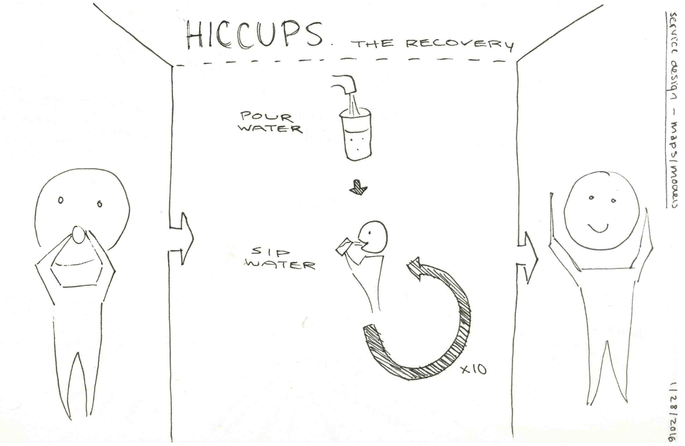

My Role
Information Designer
Project Type
Visual Design, Concept Model
2 weeks | February 2016
I explored different concept maps that dove into deep detail on a single subject to conceptualize a single point and provide a high-level representation of an idea.
Mail Composition Changes Over Time
Everyone loves receiving handwritten letters and postcards, but it is funny how as we grow older and receive more mail, the proportion of personal correspondence from friends and family tends to shrink.
Over time, we see that the amount of spam mail and bills increase while more meaningful pieces decrease.
Final Deliverable
By forming a system model that combines maps to use physical space to show amount of impact and a matrix to show distinction between categories, I represented how the volume of mail we receive increases as we become older, but the quality of the mail also drops significantly.

Process
Ideating On Mail, Ramen, and Hiccups
I focused on three concepts to map and model and explored the different ways to represent different informative parts of each topic.
In my final digitized conceptual model created in Adobe Illustrator, I focused on the idea of mail as we age over time, as there is a soft spot in my heart for paper mail. There were a few ideas that came before the final version.


__________
Ramen
Ramen is a staple of college students, but it can also become a gourmet dish. There are different ways to enjoy the meal, depending on your soup base and toppings, or you may choose to stick with your budget-friendly cup noodle.
__________
Hiccups
In all of our lives, we've heard different methods to cure hiccups, and I thought it might be fun to list all of them in a process map. I created a quick visual displaying the instructions of my own go-to cure.
